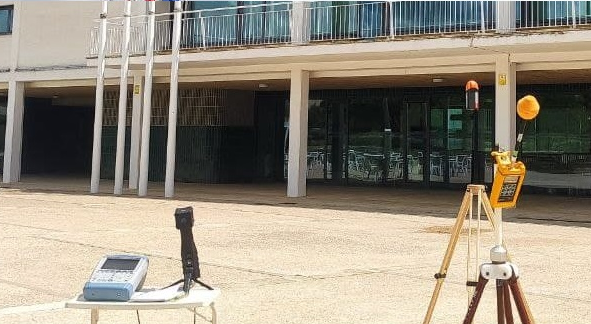

En este apartado es posible realizar medidas tanto lineales como poligonales sobre el mapa, la medida entre puntos se hace utilizando el método geodésico
This section allows you to take both linear and polygonal measurements on the map. The measurement between points is done using the geodesic method.
En este apartado es posible realizar dibujos poligonales sobre el mapa
In this section, it is possible to create polygonal drawings on the map.
Bienvenid@s al visor web oficial del grupo de investigación en radiación y sensores de la Universidad de Alcalá. En el podrás visualizar toda la información geoespacial empleada en las investigaciones sobre contaminación electromagnética, realizadas desde el año 2017, hasta la actualidad en el municipio madrileño de Meco.
Os dejamos el link a las publicaciones vinculadas a estos datos: - Esperamos que toda esta información os sea de utilidad. Cualquier duda no dudeís en contactar con nosotros a través del correo electrónico habilitado más abajo.
Hello! 👋
Welcome to the official web viewer of
the radiation and
sensor research group of the University
of
Alcalá. In it you will be able to view
all the
geospatial information used in the
investigations on
electromagnetic pollution carried out
from the year 2017
to the present in the Madrid
municipality
of Meco.
We leave you the link to the publications linked to this data: - We hope that all this information is useful to you. Any questions do not hesitate to contact us through the email enabled below.

En este apartado es posible cargar capas raster desde servicios WCS
In this section, it is possible to load raster layers from WCS services.
En este apartado es posible realizar operaciones entre capas raster. Se deben seleccionar dos capas y el tipo de operación y se generará una tercera capa con el resultado de la operación
In this section, it is possible to perform operations between raster layers. Two layers and the type of operation must be selected, and a third layer will be generated with the result of the operation.